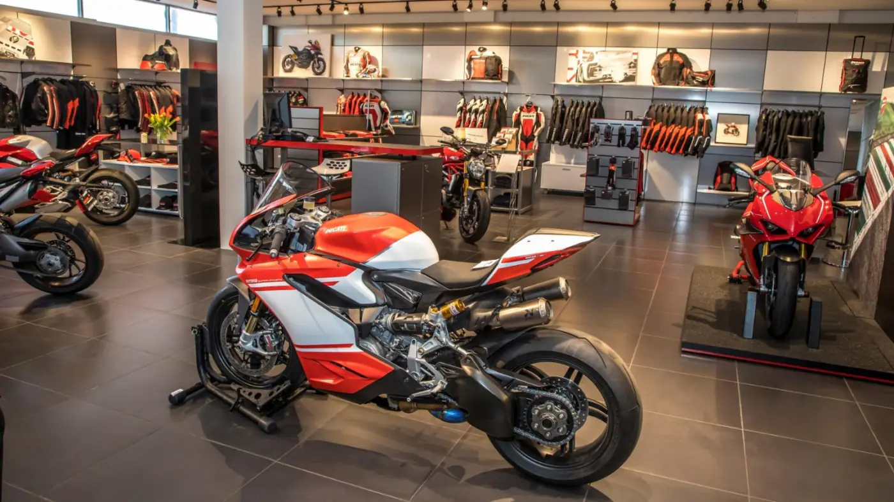
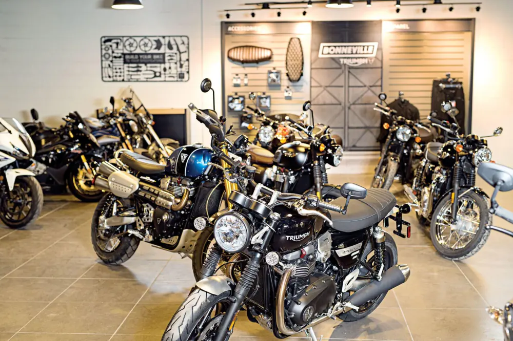

Transparency First
Important bike information should be visible before a buyer makes contact.
STACKLY Bikes is designed around one simple idea: used-bike deals should feel informed, transparent and professional from the first search to the final ownership transfer.
Many used-bike buyers struggle with unclear condition, incomplete paperwork and unrealistic asking prices. We structure marketplace information so buyers can evaluate what matters and sellers can present their motorcycles properly.

Important bike information should be visible before a buyer makes contact.
Buyers need confidence and sellers deserve serious, informed enquiries.
Search, inspection, negotiation and transfer should follow a clear process.
Each listing highlights the model year, kilometres, ownership, location, condition and asking price.
Filters help riders reach relevant motorcycles based on budget and riding needs.
Inspection-oriented information helps buyers know what to check before the deal.
Sellers can explain service history, upgrades, insurance and documentation clearly.

We encourage buyers to look beyond appearance. A strong used-bike evaluation includes mechanical condition, consumables, service records, accident history, ownership documents and how the motorcycle behaves on a test ride.
Riders searching for reliable, efficient bikes with manageable ownership costs.
Buyers looking for performance, upgrades, specific variants or premium motorcycles.
New riders who need more guidance on condition, paperwork and realistic pricing.
Owners who want to present their motorcycle professionally and reach serious buyers.
Model year and kilometres should be easy to understand at a glance.
Owner count and seller relationship should be clearly stated.
Maintenance records can explain how well the motorcycle was cared for.
RC, insurance and important legal details should be checked before purchase.
We want pre-owned motorcycles to be evaluated with the same seriousness as any important purchase. Better information creates better conversations, better negotiations and better ownership experiences.
Explore motorcycles, compare listings and use a structured approach before making your next decision.
Buying a second-hand motorcycle often means comparing incomplete ads, unclear history and inconsistent pricing. STACKLY Bikes is designed to bring the important information into one structured experience.
Our goal is simple: help riders understand the motorcycle before they spend time travelling, negotiating or arranging paperwork.
We combine the confidence of seeing a bike in a professional showroom with the convenience of discovering and comparing inventory online. Buyers can narrow choices first, then focus their inspection on the best matches.


Good used-bike buying is not only about the cheapest price. It is about understanding condition, service history and paperwork before money changes hands.
We keep listing content focused on the questions riders ask first: usage, replacements, originality, service recency and seller proof.
Every rider arrives with different priorities. First-time buyers need confidence; enthusiasts compare variant, tyres, accessories and records.
STACKLY keeps those journeys clear without making every bike feel like the same generic ad.
Explore the Marketplace